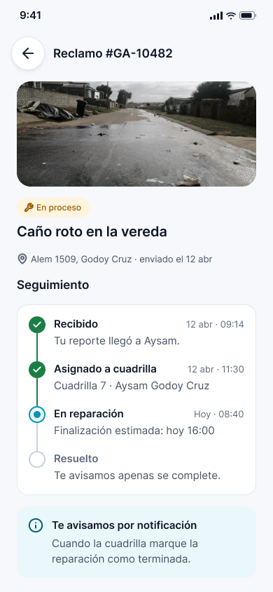
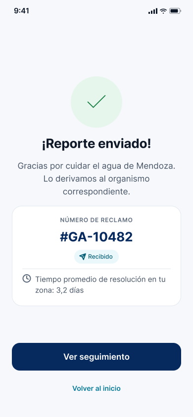
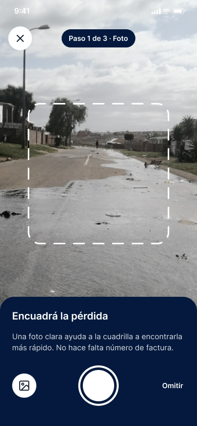
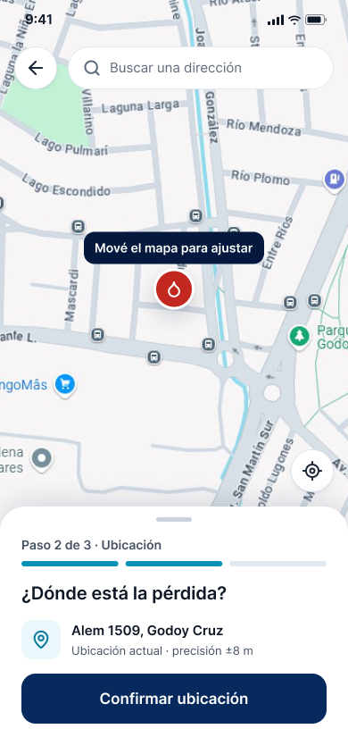
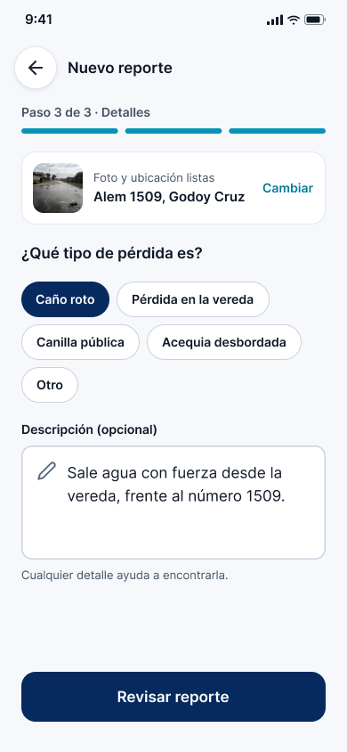
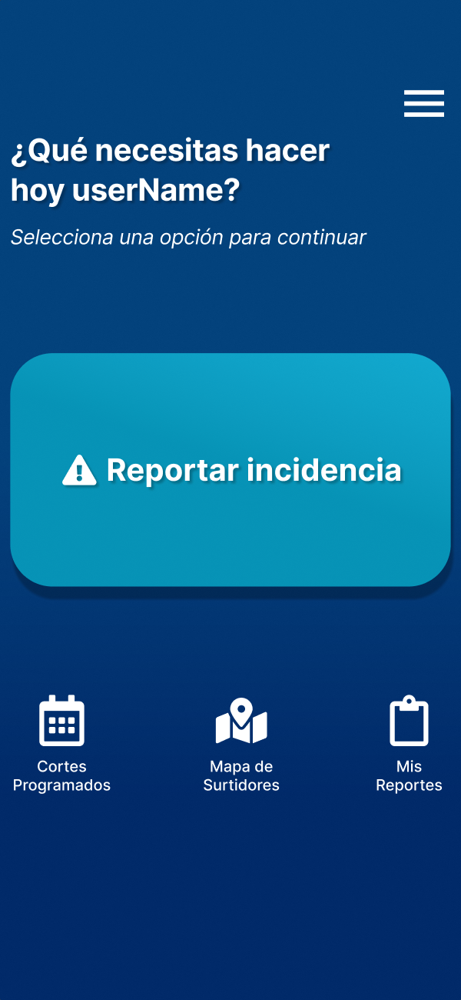
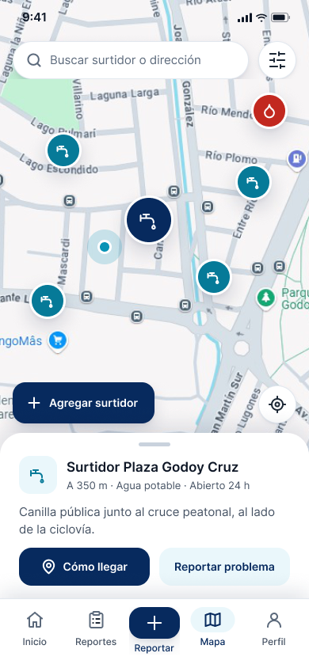
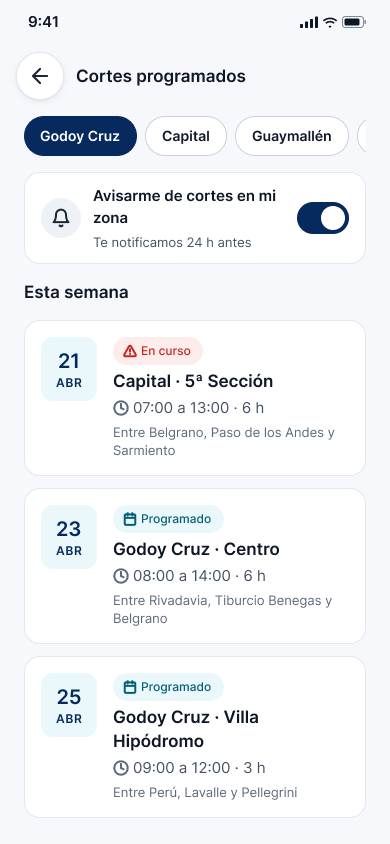

GotApp
Reportá una pérdida de agua en la vía pública en menos de un minuto, y seguí tu reclamo hasta que se resuelva.
Proyecto de Paula Pamela Marinero y Emiliano García Fuenzalida

Una herramienta simple para actuar cuando ves agua perdiéndose
GotApp es una aplicación móvil para que cualquier ciudadano de Mendoza reporte pérdidas de agua en la vía pública, con foto y ubicación, y reciba seguimiento real del reclamo.
“Basta de mirar para otro lado. Reportá roturas al instante. El cambio empieza con vos.”
Mensaje central de GotAppPropósito
Pasar de mirar a actuar: cuidar un recurso escaso con una acción concreta y rápida.
Origen
Proyecto final de un bootcamp de UX/UI, diseñado a partir de investigación con usuarios reales.
Hoy
En incubación junto al gobierno provincial, para integrarse a una plataforma de servicios hídricos.
Todos ven las pérdidas. Casi nadie sabe cómo reportarlas.
No existía una herramienta accesible para reportar una pérdida en la calle de forma rápida y con seguimiento. Los canales existentes eran burocráticos, poco intuitivos y no estaban pensados desde la urgencia del usuario.
de las personas encuestadas vio una pérdida de agua en la vía pública.
supo qué hacer ante una pérdida: la mayoría no sabe dónde ni cómo reclamar.
tuvo alguna vez afectado el suministro en su domicilio.
denuncias por pérdidas de agua en calles recibió Aysam en febrero de 2022.
“No puede hacer reclamos porque nunca logra comunicarse con la empresa.”
Frustración validada en entrevistas“Esto pasa seguido y nadie lo arregla. ¿Será la municipalidad o Aysam?”
Pensamientos del User JourneyFuente: encuesta cuantitativa del equipo (mayores de 18, Gran Mendoza) y noticias relevadas durante la investigación.
En una provincia semiárida, cada gota cuenta
Mendoza depende del deshielo de la Cordillera de los Andes y de una red de canales y acequias que sostienen la vida urbana y productiva. Con recursos hídricos limitados, una pérdida que nadie reporta es agua que no vuelve.
del agua se pierde, según una estimación de Aguas Mendocinas citada en la investigación.
Nace en la cordillera
El símbolo de GotApp une la gota y las montañas: el origen del agua que abastece a la provincia.
Cuidado colectivo
Detectar y reparar rápido reduce el derroche y protege el suministro de todos.
“Las acequias no solo decoran la ciudad: la sostienen.”
Storytelling de Ana, la user personaGotApp: reportar fácil, recibir respuesta
Con una foto, un punto en el mapa y una breve descripción, el reclamo llega al organismo correspondiente. Sin número de factura ni trámites.
Reportar
Guiado en 3 pasos: foto, ubicación por GPS y detalles.
Seguir
Número de reclamo, estados claros y notificaciones.
Informarse
Cortes programados, surtidores y consejos.
InicioLa acción principal, a un toque

ConfirmaciónNúmero y estado del reclamo
De ver la pérdida a saber que se resolvió
Ana, vecina de Godoy Cruz, ve agua corriendo por la vereda camino a su trabajo. Así lo resuelve con GotApp:

Sacá una fotoSin número de factura

Marcá la ubicaciónGPS + ajuste en el mapa

Contá qué pasaTipo y descripción breve
Recibí tu númeroConfirmación inmediata
Seguí el estadoRecibido → En proceso → Resuelto
Deslizá para ver los 5 pasos →
Pensada para todos, desde quien usa solo WhatsApp
Residentes de Mendoza mayores de 18 años en zonas urbanas y suburbanas: usuarios domésticos y pequeños comerciantes que dependen del suministro, con conocimientos básicos de tecnología.
Ana Soler · user persona validada
Profesora de Artes Digitales, vecina de Godoy Cruz. Responsable, empática y comprometida con el ambiente. Necesita un canal rápido y confiable para reportar y saber que su reclamo fue atendido.
de las personas encuestadas tiene entre 35 y 65 años.
departamentos relevados: Capital, Godoy Cruz, Guaymallén, Las Heras, Luján y Maipú.
Actores involucrados
Ciudadanos y comerciantes
Detectan y reportan las pérdidas; suman surtidores al mapa comunitario.
Aysam · empresa prestadora
Recibe los reclamos georreferenciados y asigna cuadrillas.
Cuadrillas de reparación
Actualizan el estado del reclamo hasta resolverlo.
Municipios
Coordinan la reparación de veredas y la información de cortes por zona.
Gobierno de Mendoza · incubadora
Impulsa la integración de GotApp en la plataforma provincial de servicios hídricos.
Las apps existentes están hechas para facturar. GotApp, para reportar.
El benchmark de apps de servicios de agua en Argentina mostró una desconexión entre lo que el usuario necesita y lo que ofrecen: foco comercial en facturación y trámites.
| Criterio | AySA | Aguas Cordobesas | Aguas Rionegrinas | GotApp |
|---|---|---|---|---|
| Calificación · descargas | 3,7 ★ · 500 mil | 2,5 ★ · 100 mil | 1,7 ★ · 10 mil | Diseñada y validada con usuarios |
| Foco principal | Facturas y servicios | Trámites | Oficina virtual | Reporte ciudadano de pérdidas |
| Reclamar sin factura | No | Parcial | No | Sí · foto + ubicación |
| Seguimiento del reclamo | Difícil | “No solucionan reclamos” | No | Sí · estados y avisos |
| Transparencia de tiempos | No | No | No | Sí · promedio público |
| Enfoque comunitario | No | No | No | Sí · mapa de surtidores |
Deslizá la tabla para comparar →
De ejercicio académico a solución con impacto real
Investigación y MVP
Research, prototipo de alta fidelidad y test de usabilidad: completaron el flujo sin instrucciones previas.
Presentación ante el gobierno
GotApp fue presentada ante organismos del gobierno de Mendoza.
Incubación En curso
Desarrollo como módulo de una plataforma gubernamental de servicios hídricos. Rediseño 2.0 con design system propio.
Próximo: piloto
Prueba en un departamento y medición de tiempos de resolución.
Funciones imprescindibles del MVP
Deseables, ya prototipadas
v1 · 2025

v2 · rediseño
La necesidad existe. La disposición también.
usaría una app para reportar pérdidas de agua.
sabía qué hacer: la brecha está en la acción, no en el interés.
entrevistas cualitativas para validar la persona y priorizar funciones.
apps del sector analizadas en el benchmark competitivo.
Encuesta cuantitativa
Mayores de 18 años de seis departamentos del Gran Mendoza. Confirmó que el problema es visible, recurrente y urgente.
Entrevistas y research en campo
Conversaciones en un surtidor público. Pedidos repetidos: notificaciones, mapa, historial y confirmación de envío.
Test de usabilidad
Usuarios reales completaron el flujo de reporte sin instrucciones previas. Se simplificó el flujo quitando pasos innecesarios.
“La confianza se gana mostrando que el reclamo se recibió. La app tiene que confirmar, mostrar el estado y dar seguimiento.”
Key takeaway de la investigaciónMenos agua perdida, más ciudadanía activa
Impacto ambiental
- Menos tiempo entre que se detecta una pérdida y se repara: menos agua desperdiciada.
- Datos georreferenciados para priorizar el mantenimiento de la red.
- Conciencia hídrica con consejos y alertas de cortes para planificar el uso.
Impacto social
- Participación ciudadana: cualquier vecino puede ser parte de la solución.
- Transparencia y confianza: estados y tiempos de resolución visibles.
- Inclusión: diseño accesible para personas mayores o que no son nativas digitales.
Gracias
Cuidar el agua de Mendoza empieza con un reporte. GotApp lo hace simple.
Equipo
Paula Pamela Marinero
Equipo
Emiliano García Fuenzalida

